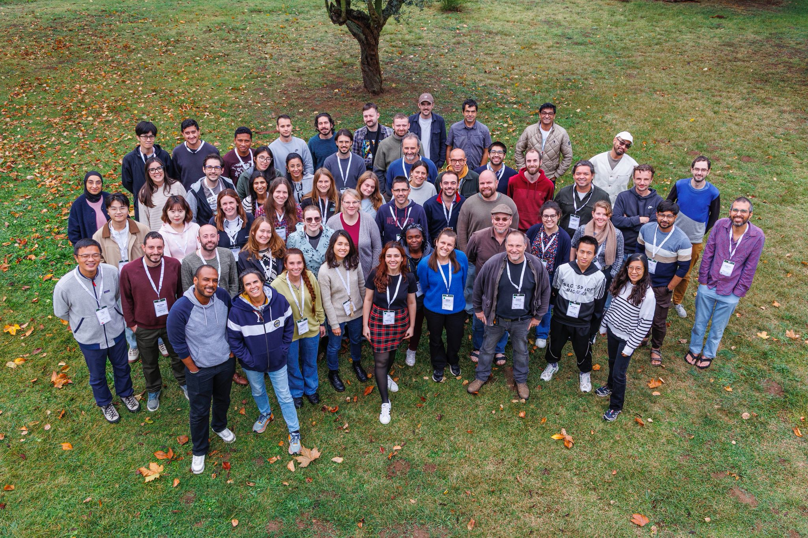

Congrats to Morgane on her new publication!
February 2026
Congratulations to Morgane, who has just published her paper "Connecting the dots: elucidating the relationship between spruce budworm population dynamics and defoliation" in CJFR!
Congratulations to Jorge on his newest publication!
January 2026
Jorge has published his paper "Assessing the drivers of nitrogen fertilizer application in Panama to support sustainable nutrient management" in the Journal of Environmental Management! Congrats, Jorge!
Lab holiday dinner
December 2025
The lab celebrates the holidays with sushi!
COP30: UN Climate Change Conference
November 2025
Ana is on the ground at COP30 in Belém, Brasil!
Morgane at InvaPact III
November 2025
Morgane is currently at the InvaPact III workshop, working on global ecological impacts of invasive species with awesome collaborator Franck Courchamp, his team, and researchers from around the world. Enjoy Barcelona, good conversation, and good food Morgane!

Welcoming Jade to the Leung Lab
September 2025
Jade is starting her MSc in Biology in the Leung Lab. Her masters project will focus on modelling land-use decision making in Panama. Welcome, Jade!
Congratulations, Dr. Andrew Sellers!
September 2025
Andrew has completed his PhD. Congratulations to Andrew! He is now a postdoctoral researcher at the Smithsonian Tropical Research Institute in the O'dea Lab.
Barbados field work
August 2025
Isabella is headed to Barbados, where she will be sampling soils as part of her masters project on macrofaunal soil biodiversity.
Ana wins the prize for best oral presentation at the 2025 CSEE annual conference!
July 2025
Ana presented her work at the annual Canadian Society for Ecology and Evolution (CSEE) conference, and received the prize for best oral presentation. Congratulations, Ana!
Congratulations to Shriram for passing his PhD Qualifying Exam
June 2025
Congratulations to Shriram for passing his PhD qualifying exam! His PhD research focuses on modelling jaguar movement ecology.
PRISM workshop
November 2024
On November 25th and 26th 2024, PRISM held its fifth workshop at the Summit Rainforest and Golf Resort in Panama City.
The topics covered were as follows:
- Developing a forest “regrowth potential” map for Panama
- Developing policy brief for Maje Watershed Land Use Plan (i.e. : Plan de Ordenamiento)
- Exploring potential drivers of mangrove forest changes in Panama
- Climate change and planetary health: a panamanian perspective
- Puerto Barú development evaluation
- Parita Bay management
Panama field work
August 2024
Jorge is currently in Panama conducting field work in mangrove ecosystems. Good luck, Jorge!